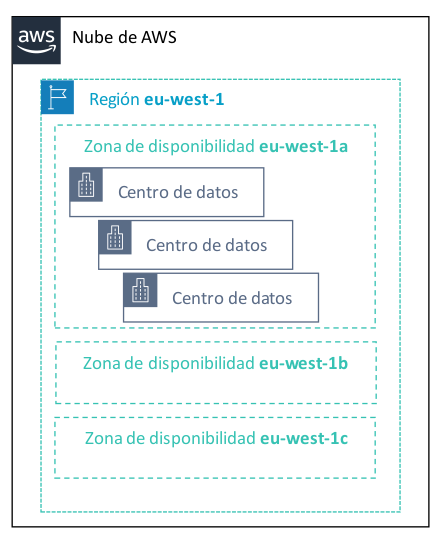

2. Infraestructura de AWS
2.1 Introducción a la Infraestructura de AWS
AWS es una plataforma de servicios en la nube que ofrece una amplia gama de servicios de cómputo, almacenamiento, bases de datos, redes, análisis y más. La infraestructura de AWS está diseñada para proporcionar una base sólida para la implementación de aplicaciones y servicios en la nube.
2.2. Regiones y Zonas de Disponibilidad
2.2.1. Regiones
AWS opera en múltiples regiones en todo el mundo. Cada región es una ubicación geográfica que contiene uno o más centros de datos llamados "Zonas de Disponibilidad".
- La replicación de datos entre regiones es controlada por usted.
- La comunicación entre regiones utiliza infraestructura de red troncal de AWS.
- Cada región proporciona a la red niveles plenos de redundancia y conectividad.
- Una región normalmente consta de dos o más zonas de disponibilidad.
Ejemplos de regiones incluyen "us-east-1" (Norte de Virginia), "eu-west-1" (Irlanda), entre otras.
2.2.2. Zonas de Disponibilidad
Cada región de AWS consta de al menos dos Zonas de Disponibilidad (AZ). Las Zonas de Disponibilidad son centros de datos separados físicamente dentro de una región y están diseñadas para ser independientes entre sí en términos de energía y conectividad. Esto proporciona alta disponibilidad y redundancia.

2.2.3. Centros de datos
- Los centros de datos de AWS están diseñados para ofrecer seguridad.
- En los centros de datos se almacenan y se procesan los datos.
- Cada centro de datos tiene alimentación, redes y conectividad redundantes, y se aloja en una instalación independiente.
- Un centro de datos suele albergar entre 50 000 y 80 000 servidores físicos.
2.3. Servicios Básicos de AWS
Este es el esquema de servicios básicos de AWS
2.3.1. Amazon EC2 (Elastic Compute Cloud)
Amazon EC2 es un servicio de cómputo escalable que te permite lanzar y administrar máquinas virtuales (instancias) en la nube. Puedes seleccionar el tipo de instancia, el sistema operativo y la capacidad de cómputo que necesitas.
2.3.2. Amazon S3 (Simple Storage Service)
Amazon S3 es un servicio de almacenamiento en la nube que permite almacenar y recuperar datos en forma de objetos. Es altamente escalable, duradero y se utiliza para almacenar una variedad de tipos de datos, incluidas imágenes, videos, archivos de registro y más.
2.3.3. Servicios de BD
Estos servicios son parte de la amplia gama de servicios en la nube ofrecidos por Amazon Web Services (AWS) y son esenciales para gestionar bases de datos en la nube.
-
Amazon Relational Database Service (RDS): Amazon RDS es un servicio de administración de bases de datos relacionales completamente gestionado. Proporciona una infraestructura escalable y de alta disponibilidad para bases de datos relacionales como MySQL, PostgreSQL, Oracle, SQL Server y MariaDB.
-
Amazon Aurora: Amazon Aurora es un motor de base de datos relacional compatible con MySQL y PostgreSQL que se ha optimizado para ofrecer un alto rendimiento y una escalabilidad excepcional.
-
Amazon Redshift: Amazon Redshift es un servicio de almacenamiento de datos en la nube que se ha diseñado específicamente para el análisis de datos y el procesamiento de consultas a gran escala.
-
Amazon DynamoDB: Amazon DynamoDB es un servicio de base de datos NoSQL completamente gestionado que ofrece un rendimiento rápido y escalabilidad automática.
2.3.4. AWS Lambda
AWS Lambda es un servicio de cómputo sin servidor que te permite ejecutar código en respuesta a eventos sin necesidad de administrar servidores. Es ideal para la ejecución de funciones pequeñas y efímeras.
2.3.5. Amazon VPC (Virtual Private Cloud)
Amazon VPC te permite crear una red virtual aislada en la nube donde puedes lanzar recursos de AWS de manera segura. Puedes definir tu propia topología de red, subredes, tablas de rutas y reglas de seguridad.
2.3.6. AWS IAM (Identity and Access Management)
AWS IAM es un servicio de administración de identidades que te permite controlar el acceso a tus recursos de AWS. Puedes crear usuarios, grupos y roles, y definir políticas de acceso.
2.4. Arquitecturas en AWS
2.4.1. Arquitectura de Alta Disponibilidad (HA)
Las arquitecturas de alta disponibilidad en AWS se basan en la redundancia y la distribución geográfica de recursos para garantizar que las aplicaciones estén siempre disponibles incluso en caso de fallos.
2.4.2. Escalabilidad Automática
La escalabilidad automática permite que los recursos de AWS se ajusten automáticamente en función de la demanda. Puedes escalar horizontalmente agregando instancias o verticalmente mejorando las instancias existentes.
2.4.3. Arquitectura sin Servidor (Serverless)
Las arquitecturas sin servidor aprovechan servicios como AWS Lambda y Amazon API Gateway para eliminar la administración de servidores y ejecutar código de manera efímera en respuesta a eventos.